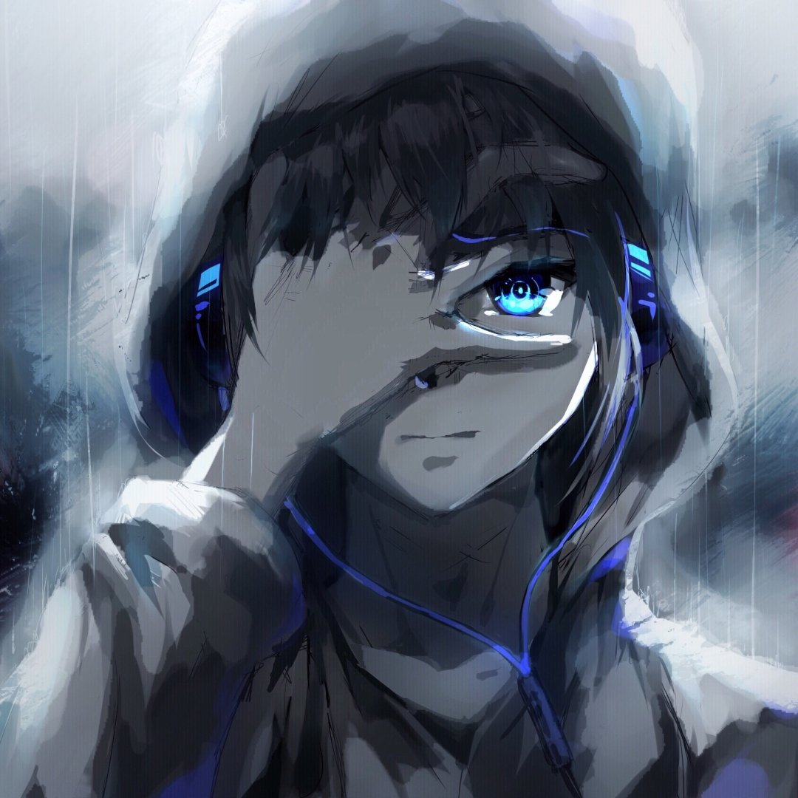

 ENG
ENG
Меня зовут Арсений Патрушев,
Я развивающийся fullstack-разработчик. Веду свой
телеграмм канал. В котором публикую свои достижения,
а также свое развитие в программировании.
Увлекаюсь игрой на гитаре, практикуюсь
в программировании.
Сейчас изучаю CSS и HTML, параллельно
программируя на JavaScript.
Сейчас я знаю базу следующих языков:
JavaScript, C#, C++. Также знаю базу языка разметки -
HTML и языка декорирования CSS.
Работал в таких компаниях, как - Fami Projects,
Eternal Games, Rampage Games.